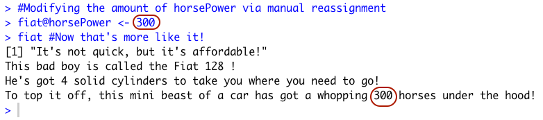
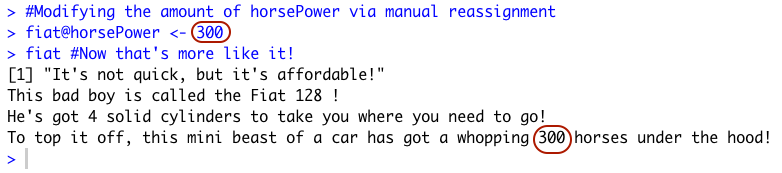

Module 08: Reading and Manipulating Datasets in txt formats with plyr
--March 7th, 2021--
This week's assignment required the reading and manipulation of a dataset in a .txt format, which I have never done before. It ended up being really simple, especially with the provided instructions.
I enjoyed using the plyr package, and learning about it's immense utility in manipulating and summarizing dataframes. I can see a lot of potential uses for this package in the final project.
I documented the overall process in the compiled R markdown file below. Due to the laid-back nature of this week's homework, I decided to add a small challenge by formatting the output file to look more professional.
All of the files can be found on my Github page.
Module 07: S3 and S4 Object-Oriented Programming in R
--February 27th, 2021--
This week's module was very interesting, I enjoy using the OOP S3 and S4 systems and am excited to see how
they can be used to supplement data analysis and package creation.
I decided to use the mtcars data set, included in R by default. I assigned it to a data frame
named "cars" for convenience.
 Next I used some generic S3 functions on the dataset.
I then created a function "fastCar" to create objects using data from the mtcars data set of the class "fastCar".
I created two objects for this class using the function.
You can see that both of these objects are of class "fastCar", and checking with the mtcars data set, you can see
that these objects correctly represent the two cars named "Dodge Challenger" and "Pontiac Firebird".
Next I used some generic S3 functions on the dataset.
I then created a function "fastCar" to create objects using data from the mtcars data set of the class "fastCar".
I created two objects for this class using the function.
You can see that both of these objects are of class "fastCar", and checking with the mtcars data set, you can see
that these objects correctly represent the two cars named "Dodge Challenger" and "Pontiac Firebird".
 Next I created a method for this S3 class to change the number of cylinders assigned to objects.
Next I created a method for this S3 class to change the number of cylinders assigned to objects.
 It required the creation of three different functions. A generic function with the required "UseMethod" function embedded within it, a default function to run when
R can't locate a proper class to run the function on, and a function telling R what to do when the generic function is called on an object of class "fastCar".
It required the creation of three different functions. A generic function with the required "UseMethod" function embedded within it, a default function to run when
R can't locate a proper class to run the function on, and a function telling R what to do when the generic function is called on an object of class "fastCar".
I then used the new class method "setCylinders" on the two previously created S3 objects "Challenger" and "Firebird" to give them a ridiculous number of engine cylinders.
 Moving on to S4 classes and objects, I defined a function that generates objects of the class "slowCar". I also checked to make sure this function was considered to be S4, using the
isS4() function.
I then used the new() function to create two new objects of the newly defined "slowCar" class. I chose the "Fiat 128" and "Honda Civic" cars from the mtcars data set.
Moving on to S4 classes and objects, I defined a function that generates objects of the class "slowCar". I also checked to make sure this function was considered to be S4, using the
isS4() function.
I then used the new() function to create two new objects of the newly defined "slowCar" class. I chose the "Fiat 128" and "Honda Civic" cars from the mtcars data set.
 Once again checking with the mtcars dataset, you can see that the names, number of cylinders, and horsepower are all accurate.
I then defined a method for this S4 class "slowCar" for the generic "show()" function that operates in the background whenever the name of an object is typed into the console.
I proceeded to test the method with the two created objects "fiat" and "civic". The function prints out the details of each object in nicely formatted sentences.
Once again checking with the mtcars dataset, you can see that the names, number of cylinders, and horsepower are all accurate.
I then defined a method for this S4 class "slowCar" for the generic "show()" function that operates in the background whenever the name of an object is typed into the console.
I proceeded to test the method with the two created objects "fiat" and "civic". The function prints out the details of each object in nicely formatted sentences.
 Next I tried manual reassignment of the "horsePower" slot for the "fiat" object, making it's horsepower 300.

Next I tried manual reassignment of the "horsePower" slot for the "fiat" object, making it's horsepower 300.

Now to answer the four questions posed in the assignment on Canvas.
1. You can tell what object-oriented system an object is associated with by using the isS4() function,
with the object in question as the argument. I tested the S3 object "challenger" and the S4 object "fiat" with the
function. Remember that the "challenger" object was created with an S3 function, and the "fiat" object was created with an S4 function.
2. You can determine the base type of an object using the "typeof()" function in R. Some examples are below. Notice that the
"fiat" object is considered S4, while the "challenger" object is considered a "list", not S3.
 3. A generic function in R is like a multi-purpose operator that changes how it works depending on what class of object it is faced with.
It can be altered to use an unlimited number of different objects, as long as it has instructions on how to use each object. In this week's assignment,
generic functions were used multiple times.
3. A generic function in R is like a multi-purpose operator that changes how it works depending on what class of object it is faced with.
It can be altered to use an unlimited number of different objects, as long as it has instructions on how to use each object. In this week's assignment,
generic functions were used multiple times.
In the S3 examples, I defined a new generic function that only knows how to use one class of objects, "fastCar". This
generic function can be expanded upon to use other classes of objects if needed. In the S4 example, I added a method to the generic function "show()" to tell the
function exactly what to do when using an object of class "slowCar".
4. The main differences between S3 and S4 object oriented programming in R : S4 classes are formally defined, and objects associated with them are classified in R as belonging to them.
Objects associated with S3 classes are recognized by R as lists with an attribute of the S3 class. S4 has something called "multiple dispatch", which allows the generic functions to determine which
methods to use based on multiple arguments, rather than S3, which only views the first argument of a generic function to determine which method to use.
This results in fewer user errors when using a package written with S4 classes and methods.
All-in-all, S4 is a more stable format for creating packages in R.
This last question was tricky, I used this webpage for help:
As always the compiled R file can be found below, and all of the files can be found on my Github page.
Module 06: More Matrices in R
--February 19th, 2021--
The readings this week were interesting, I enjoyed learning the overall process of creating an R package. The introduction to object-oriented programming in R with the differences
between S3 and S4 was cool as well.
This week's assignment was fairly simple, I found the diag() function in R to be very straight forward. Adding and subtracting matrices was also much easier to understand than
multiplying them.
Question 1 first required the creation of two square matrices.
Then some simple addition and subtraction operations with the newly created matrices.
Question 2 required the creation of a 4 column, 4 row matrix with the values 4,1,2,3 in the diagonal, using the diag() function.
 Question 3 required the creation of a 5 column, 5 row matrix with 3's filling up the diagonal, 2's filling up the rest of the first column, and 1's filling up the rest of the first row.
The example provided is below:
I first generated a 5x5 identity matrix with 3's in the diagonal using the diag() function.
Question 3 required the creation of a 5 column, 5 row matrix with 3's filling up the diagonal, 2's filling up the rest of the first column, and 1's filling up the rest of the first row.
The example provided is below:
I first generated a 5x5 identity matrix with 3's in the diagonal using the diag() function.
 I then created another 5x5 matrix, this time with zeros everywhere except the 1's and 2's required in the first row and first column.
I used matrix(c(0,2,2,2,2,1,0,0,0,0,1,0,0,0,0,1,0,0,0,0,1,0,0,0,0), ncol=5).
Finally I added the two matrices together, getting the desired result.
I then created another 5x5 matrix, this time with zeros everywhere except the 1's and 2's required in the first row and first column.
I used matrix(c(0,2,2,2,2,1,0,0,0,0,1,0,0,0,0,1,0,0,0,0,1,0,0,0,0), ncol=5).
Finally I added the two matrices together, getting the desired result.

As always the compiled R file can be found below, and all of the files can be found on my Github page.
Module 05: Matrices in R
--February 14th, 2021--
This assignment focused on learning about using matrices in R programming. The initial task was to
find the inverse and determinant of two matrices named A and B. A was a 10 column, 10 row matrix with values from
1 to 100. B was a 10 row, 100 column matrix with values from 1 to 1000.
I generated the two matrices using the matrix() function in R, assigning them to variables A and B.
 I then found the determinants for both matrices using the det() function in R. The determinant of A was
0, and the determinant of B couldn't be found because it was a non-square matrix.
I then found the determinants for both matrices using the det() function in R. The determinant of A was
0, and the determinant of B couldn't be found because it was a non-square matrix.
 I then used the solve() function in R to find the inverse values of the two matrices. Matrix A did not have an inverse
because it was "exactly singular", and matrix B did not have a clear inverse once again because it was non-square.
I then used the solve() function in R to find the inverse values of the two matrices. Matrix A did not have an inverse
because it was "exactly singular", and matrix B did not have a clear inverse once again because it was non-square.
 In the second portion of the assignment outlined in the Announcement on Canvas, several matrix calculations were required.
In the second portion of the assignment outlined in the Announcement on Canvas, several matrix calculations were required.
Using the same matrices, A and B, the first step was transposing them using the t() function in R.
The next step was to create two vectors. I purposefully made sure that each vector, a and b, had either 10 or 100 values
so that they would better align with matrices A and B for multiplication using the %*% argument.
 Next we had to test matrix multiplication using the %*% argument with matrices A and B, and vectors a and b.
Matrix A and vector a were able to be multiplied in any order, since the length of vector a is 10 and matrix A has both 10
columns and 10 rows.
Next we had to test matrix multiplication using the %*% argument with matrices A and B, and vectors a and b.
Matrix A and vector a were able to be multiplied in any order, since the length of vector a is 10 and matrix A has both 10
columns and 10 rows.
 Matrix B and vector b could only be multiplied without error when matrix B was placed before vector b. This is because matrix B has the same number of columns, 100, as vector b has values, also 100.
When vector b comes before matrix B in the calculation (b %*% B), R returns an error because the values of vector b don't equal the number of rows in matrix B, which is 10.
Matrix B and vector b could only be multiplied without error when matrix B was placed before vector b. This is because matrix B has the same number of columns, 100, as vector b has values, also 100.
When vector b comes before matrix B in the calculation (b %*% B), R returns an error because the values of vector b don't equal the number of rows in matrix B, which is 10.
 The final task was finding the inverse of a square matrix with two columns, two rows, and values 2 through 5. The matrix was generated using the matrix() function
in R, the determinant was found with the det() function, and the inverse was found with the solve() function.
The final task was finding the inverse of a square matrix with two columns, two rows, and values 2 through 5. The matrix was generated using the matrix() function
in R, the determinant was found with the det() function, and the inverse was found with the solve() function.
 Before this assignment I was very unfamiliar with matrices, so this was a good help in learning the basics of their use and general terminology. I ended up reading about matrix multiplication
online to understand what exactly the computer is doing when using the %*% argument, as I was not previously exposed to matrices in any math classes prior to this course.
Before this assignment I was very unfamiliar with matrices, so this was a good help in learning the basics of their use and general terminology. I ended up reading about matrix multiplication
online to understand what exactly the computer is doing when using the %*% argument, as I was not previously exposed to matrices in any math classes prior to this course.
Looking forward to progressing towards building an R package!
As always the compiled R file can be found below, and all of the files can be found on my Github page.
Module 04: Blood Pressure Diagnoses
--February 1st, 2021--
This week's assignment required the analysis of some sample medical data representing blood pressure diagnoses of 10 different patients.
Two side by side plots were required. The assignment wanted a histogram next to a boxplot, and for these plots to visualize firstly the patient blood pressure
and then the medical doctor's final decision regarding their need for immediate care. I found that the most meaningful way to organize the plots was by comparing
the histogram of blood pressure to the histogram of final decision, and likewise for the box plots.
I first created numeric vectors with the supplied data, with help from the assignment's hint. I then combined the vectors into a dataframe named "hosp_data".
 I then generated a side by side plot using "par(mfrow=c(1,2)", placing the histograms for blood pressures and final decision together for comparison.
Next I generated a side by side plot placing the box plots for blood pressure and final decision next to eachother.
I then generated a side by side plot using "par(mfrow=c(1,2)", placing the histograms for blood pressures and final decision together for comparison.
Next I generated a side by side plot placing the box plots for blood pressure and final decision next to eachother.
 The histograms ended up being far more useful for data comparison than the box plots, as you are able to see the different distributions of the data more effectively.
The histograms ended up being far more useful for data comparison than the box plots, as you are able to see the different distributions of the data more effectively.
From the side by side histograms you can see that the relationship between patient blood pressure and final decision for care by a medical doctor appear to make sense.
6 patients received high priority for immediate medical care. Four of the patient blood pressures stand out as being very abnormal and dangerous. Two patients had blood pressures
under 50, indicating severe hypotension, while two other patients had blood pressures over 150, indicating cardiovascular hypertension. The other two patients that received immediate care
may have had relatively normal blood pressures but other health variables not recorded led to the doctor's final decision.
The information presented is not nearly enough to make an informed decision as to the efficacy and accuracy of the medical doctor's diagnoses. For one there are only
10 patients presented in the dataset, and in order to properly gauge the efficacy of a diagnosis we need data on the patient's other health markers, like blood content levels,
body temperature, heart rate, and general condition.
As always the compiled R file can be found below, and all of the files can be found on my Github page.
Module 03: Matrices and Data Frames
--January 26th, 2021--
This week's module was difficult. I continuously ran into errors with the prescribed operations in the assignment. While I worked around some of them, I was unable to complete
certain portions due to these unrelenting errors.
The most challenging portion was the matrix multiplication, as attempting to multiply a matrix is impossible to my knowledge with the dataset provided, unless the names column is taken away in order for the
matrix to recognize the numbers as integers. With this in mind, I attempted to recreate the example provided in the assignment, but could not for the life of me figure out how to make as.matrix(C.df)%*%B produce
anything other than errors. The error I kept receiving is shown below:

I did end up successfully obtaining the resulting matrix, but had to use a different method of multiplication by turning C.df into a matrix called C.m, then typing C.m * 1010101.
The only other error I consistently ran into was with finding the mean of data frames, as my version of R obstinantly refused to offer a value, printing out the message seen below:

If you see anything I did faulty to receive these errors please let me know, as of now I am unable to see what I have done wrong.
The full R file for this module can be viewed and downloaded below. Any lines returning an error have been commented out in order to successfully compile the pdf.
All updated files for this site and for the modules can be viewed at my github page here.
Module 02: Test and Fix the Function
--January 22nd, 2021--
For this homework assignment, the task was to test a function posted in Canvas and identify it's possible errors.
I ran the function with the predetermined dataset (the vector object named assignment2) and R-Studio returned the following error:

This error appears because the 'myMean' function calls upon two nonexistent data objects in its mean and length functions. It calls upon
an object named "assignment" in its mean function, and it calls upon an object named "someData" in its length function. For the myMean function to
properly compute the mean of "assignment2", it needs to call upon "assignment2" in both the mean and length functions within it.
I fixed the errors and wrote a new function named "myWorkingMean" that properly computes the mean of "assignment2", shown below:
I also tested the result of "myWorkingMean" against R's built in "mean" function, and they returned the same values. This can be seen in the image above.
The full R file for this module can be viewed and downloaded below. The "myMean" function had to be commented out to successfully compile the file since it runs an error.
All updated files for this site and for the modules can be viewed at my github page here.
Module 01: First Assignment
--January 11th, 2021--
This is my first homework post for R programming in graduate school, very excited to be here!
My GitHub repository can be found here.
With the instruction in this week's module I successfully configured github so I can now use the command line to
update my repository, shown below.